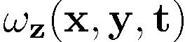
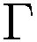
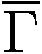
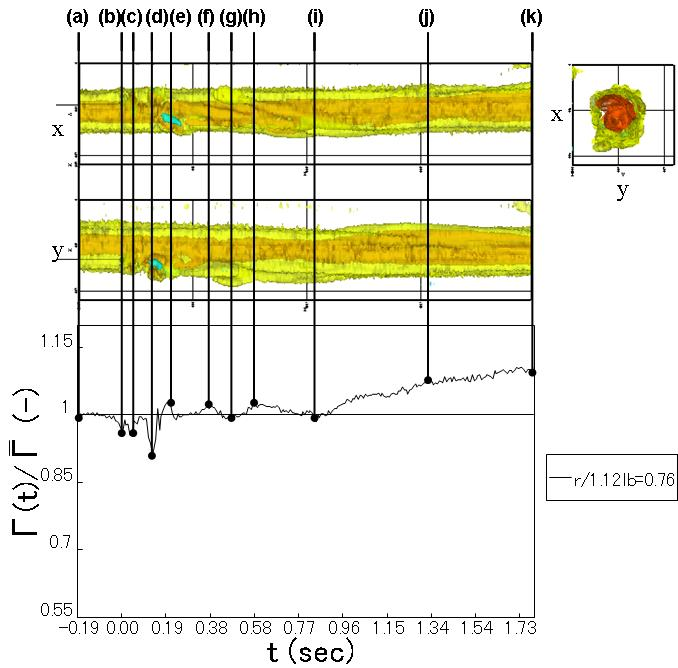
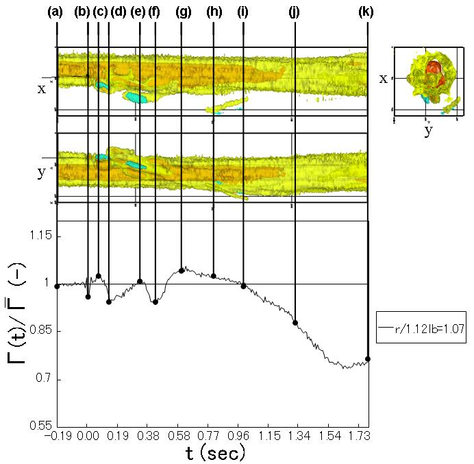

| Interaction between a Burgers vortex and wake vortex structure generated by a settling particle |
|
Abstract
Interactions between a single particle and a single Burgers vortex are observed by using 2D-PIV measurements as elementary interactions for modeling particle-laden turbulent flows. We focus on the interaction between a Burgers vortex and wake structure generated by a settling particle. It is found that the interaction between the vortices shed from the particle and the Burgers vortex induces the large fluctuation in the circulation of the vortex. Moreover, fragmentation and mergence of the Burgers vortex core are observed.
Introduction
Prediction and control of turbulent flows laden with particles are practical engineering and environmental interests since these flows occur in energy convection devices (incinerators and pulverized coal combustion) and in environmental issues (atmospheric pollution, yellow-sand phenomenon and atmospheric scattering pollens). These flows have wide range of length and time scale, such as size distribution and response time scale of particle and vortex, in non-linear interactions of particles-vortices, particles-particles and vortices-vortices.
In single-phase isotropic turbulence and wall-turbulence, the vortex structure known as ``coherent structure'' is observed. Coherent structures are composed of many tiny vortex tubes which play an important role in the momentum and energy transportation in turbulent flows. The vortex tube is modeled in terms of Burgers vortex, which has an analytical solution of Navier-Stokes equations, as well as strained spiral vortex. Kambe and Hatakeyama have noted that fully developed turbulence can be theoretically modeled as an ensemble of Burgers vortices distributed randomly in space. Thus, Burgers vortex is considered to be an elementary vortex in turbulence.
Recently, by using direct numerical simulation, P.Bagchi and S.Balachander (2004) indicated that the vortices shed from a particle whose diameter is larger than the Kolmogorov length scale have an influence on the total kinetic energy of turbulence in the isotropic turbulent flow. In their study, a stationary particle was subjected to a frozen isotropic turbulence superimposed on a uniform flow. They observed enhancements of root-mean-square value of velocity fluctuation in the wake as effects of the particle on the isotropic turbulent flow.
The interaction between a single particle and a single vortex tube is considered to be one of elementary interactions in turbulent flows laden with particles. Several researches have studied on the elementary interaction for particles of different sizes and conditions, as described bellow.
In the case of a numerically investigated that the lift force on a fixed particle caused by a vortex tube imposed on a uniform flow. As the vortex passes, the directions of the lift force changes. In the cases of a small vortex, the lift coefficient is lineally proportional to the circulation of the vortex tube, while in the cases of a large vortex, the lift coefficient is linearly proportional to the maximum velocity of the fluctuation induced by the vortex tube.
An experimental study was performed on the interaction between a vortex tube and the wake of a particle. The particle is supported by a support arm inserted into the water tank from outside. The generated vortex is similar to a Burgers vortex. The particle is initially moved toward the vortex at a constant velocity in a plane perpendicular to the vortex axis, after which it is gradually brought to a rest point. In this experiment, Particle Reynolds numbers are sufficiently large to generate an unsteady vortex shed from the particle. The experiments were carried out for particles with different diameters by using a combination of Laser-Induced Fluorescence (LIF) and Particle Image Velocimetry (PIV). A variety of different interaction processes are observed to occur in the experiments, such as the entrainment of the particle wake into the vortex core, the formation of waves on the vortex, and the attraction of the vortex to the particle surface. Concerning the interaction between a particle and a vortex, in these experimental and numerical studies, a particle is fixed in the flow.
In the present study, we focus on the effects of a freely falling particle on a Burgers vortex as the elementary step of an interaction in turbulent flows laden with particles. A Burgers vortex, whose axis is parallel to the direction of gravitational acceleration, is generated in a cylindrical water tank. The observed plane perpendicular to the vortex axis is measured by using PIV. The influences of the flow around a particle on a Burgers vortex are presented In our previous works. In particular, the focus of the present study is to examine the influence of the wake vortices shed from a particle on a Burgers vortex.
Experimental setup
This system is composed of a flow system (1-7), a optical system for PIV (8-12) and a particle detection system (13-15). The Burgers vortex is measured through the observation window installed at the lower part of the water tank by using PIV measurements. The PIV conditions are summarized in Table 1. In Cartesian coordinates, the observation area is illuminated with a laser light sheet at 150 mm above the orifice meter. The high-speed CMOS camera starts captur-ing the images when the settling particle is detected by the area sensor (as shown in the magnified image in Fig. 1).
Fig. 1. Experimental setup
Quasi-three dimensional vorticity field and the three components of the velocity of a particle
In order to visualize the three-dimensional vortex structure, the time series data set of vorticity distributions is stacked like a tomographic scan. Figure 2 shows the quasi-three dimensional vorticity field and a three component velocity of Particle D (Steel, Diameter: 3mm).
Fig. 2. Quasi-three dimensional vorticity field  and a three component velocity
|
Results
In the case of (1.8)/  >1 shown in Fig. 3, Particle D passes through the forced vortex region (r/1.12lb=0.76). The circulation fluctuates in the time interval between (b) and (i). In the time interval between (c) and (g), several pairs of vorticities are observed in  . When the circulation increases, positive vorticity appears in the area. On the other hand, when the circulation decreases, negative vorticity appears in the area. It is found that the fluctuation of the circulation is caused by the shed vortices. However, it is observed that the mergence of the vortex core occurs. Here, the vortex core is the vorticity of the forced vortex region.
In the case of (1.8)/ < 1, Particle D passes through the free vortex area (r/1.12lb =1.07) as shown in Fig. 4. The circulation is fluctuating from the time range (b) to (g). In the time range from (b) to (f), several pairs of vorticities are observed as the case of increase of the circulation. In the time range from (i) to (k), the fragmentation of the vortex core is observed.
In the wake of the particle, the interaction between the vortices shed from the particle and the Burgers vortex induces the large fluctuation in the circulation of the vortex. It is expected that the effect of the settling particle on the circulation will last a long time, as well as that the fluctuation will converge to the initial state after a long period of time. Moreover, fragmentation and mergence of the Burgers vortex core are observed. Due to the three-dimensional structure of the interaction, it is assumed that z component of the vorticity increases (decreases), after which the other components decrease (increase), thus inducing mergence (fragmentation). . When the circulation increases, positive vorticity appears in the area. On the other hand, when the circulation decreases, negative vorticity appears in the area. It is found that the fluctuation of the circulation is caused by the shed vortices. However, it is observed that the mergence of the vortex core occurs. Here, the vortex core is the vorticity of the forced vortex region.
In the case of (1.8)/ < 1, Particle D passes through the free vortex area (r/1.12lb =1.07) as shown in Fig. 4. The circulation is fluctuating from the time range (b) to (g). In the time range from (b) to (f), several pairs of vorticities are observed as the case of increase of the circulation. In the time range from (i) to (k), the fragmentation of the vortex core is observed.
In the wake of the particle, the interaction between the vortices shed from the particle and the Burgers vortex induces the large fluctuation in the circulation of the vortex. It is expected that the effect of the settling particle on the circulation will last a long time, as well as that the fluctuation will converge to the initial state after a long period of time. Moreover, fragmentation and mergence of the Burgers vortex core are observed. Due to the three-dimensional structure of the interaction, it is assumed that z component of the vorticity increases (decreases), after which the other components decrease (increase), thus inducing mergence (fragmentation).

Fig. 3. Particle D (r/lb=0.76): Time series of (t)/ and
|

Fig. 4. Particle D (r/lb=1.07): Time series of (t)/ and
| |
|
|
Related papers
- Interaction between a Burgers vortex and wake vortex structure generated by a settling particle
Yohsuke Tanaka, Kazuaki Otsu , Takuya Tsuji and Toshitsugu Tanaka
Journal of JSEM, Vol.9, pp.1-6, 2009.
- Influence of a Gravitationally-Settling Particle on a Burgers Vortex
Yohsuke Tanaka,¡¡Kazuaki Otsu , Takuya Tsuji and Toshitsugu Tanaka
Transactions of the Japan Society of Mechanical Engineers. B, Vol.73, No.734(20071025) pp. 2107-2115, 2007 (in Japanese)
- Experimental study on the interaction between Burgers vortex and a solid particle using 2D PIV measurement
Yohsuke Tanaka ,¡¡Kazuaki Otsu, Toshihiro Kawaguti and Yutaka Tsuji
Journal of JSEM, Vol.7, Special Issue, pp.17-20, 2007
- Interaction between Burgers vortex and a settling particle
Yohsuke Tanaka, Kazuaki Otsu , Takuya Tsuji and Toshitsugu Tanaka
The second International Symposium on Advanced Fluid/Solid Science and Technology in Experimental Mechanics, 69, Suita, Osaka, Japan, September 23-25, 2007.
- Experimental study on the interaction between Burgers vortex and single particle for modeling of a particulate turbulent flow
Yohsuke Tanaka, Takuya Tsuji and Toshitsugu Tanaka
5th international symposium on Turbulence and Shear Flow Phenomena, Vol 3, pp.1343-2348, Munich, Bavaria, Germany, August 29-29, 2007.
- Measurement of the interaction between a single particle and a single Burgers vortex
Yohsuke Tanaka, Kazuaki Otsu, Takuya Tsuji and Toshitsugu Tanaka
Proceedings of 5th Joint ASME/JSME Fluids Engineering Conference, FEDSM2007-37217, San Diego, California, USA, July 30-August 2, 2007.
- Experimental study on the interaction between Burgers vortex and a solid
particle using 2D PIV measurement
Yohsuke Tanaka, Kazuaki Otsu, Toshihiro Kawaguti and Yutaka TSUJI
International Symposium on Advanced Fluid/Solid Science and Technology in
Experimental Mechanics, Sapporo, Hokkaido, Japan, July 11-14, 2006.
- Experimental
study on the interaction between Burgers vortex and a solid particle using
2D PIV measurement
Yohsuke Tanaka, Takuya Tsuji, Toshihiro Kawaguchi, Toshitsugu Tanaka and
Yutaka Tsuji
2006 59th Annual Meeting of the APS Division of Fluid Dynamics, Tampa Bay,
Florida, USA, November 19-21, 2006.
|
BACK
|
© Measurement System Laboratory, Kyoto Institute of Technology.

|